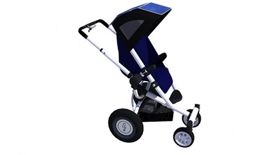
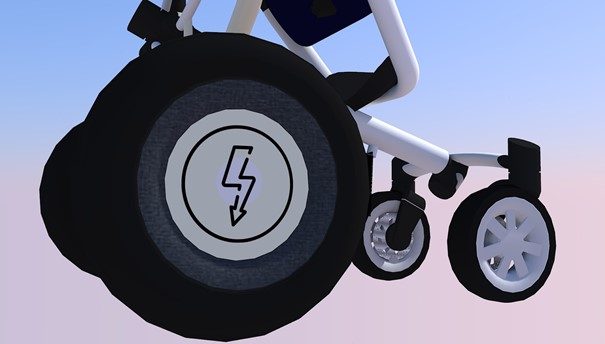
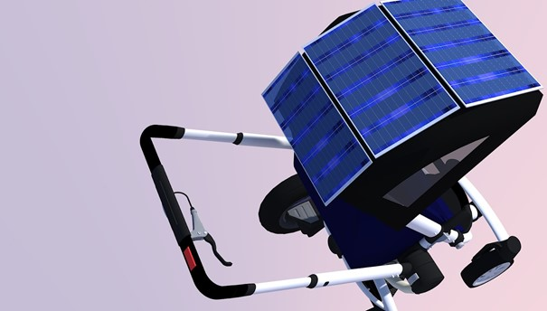
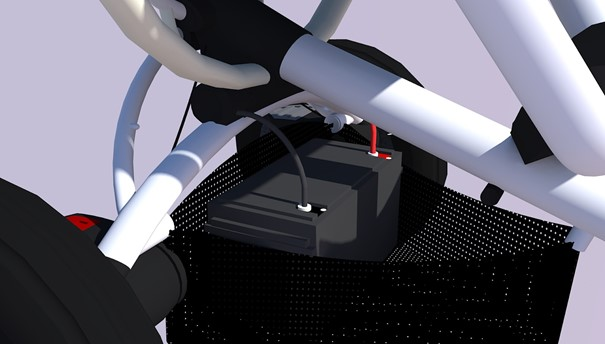
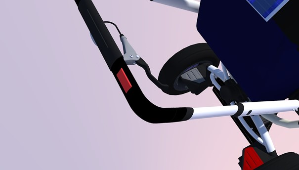

avec Babeasy facilitez-vous la vie !!
La première poussette assistée équipée d’un panneau photovoltaïque

Motorisation
Deux puissants moteurs-roues permettent de propulser la poussette sans le moindre effort. Ce sont des moteurs-roues sans balais dont la puissance peut atteindre jusqu’à 200 W, et la vitesse de rotation des moteurs est de 1800 tours / min.

Alimentation
le panneau photovoltaïque capable de délivrer une tension de 18V pliable est disposé sur la capote de la poussette. Celui-ci est composé de trois cellules permettant de rabattre la capote facilement.

Autonomie
Une batterie lithium-ion, ayant une capacité de 10.400 mAh . Celle-ci permet d’alimenter tous les composants électroniques de la poussette et a une autonomie pouvant aller jusqu’à 6h. Le temps de charge estimé pour atteindre un niveau de 80-100 % est entre 30 et 45 minutes.

Sécurité
les principales sécurités de notre poussette. En effet, lorsque le bouton poussoir n’est pas maintenu, le dispositif électrique s'arrête et le système est de nouveau manuel. Le risque de perdre le contrôle de la poussette est ainsi évité. Un frein est également présent sur le guidon de la poussette permettant de la retenir plus aisément dans les descentes.
